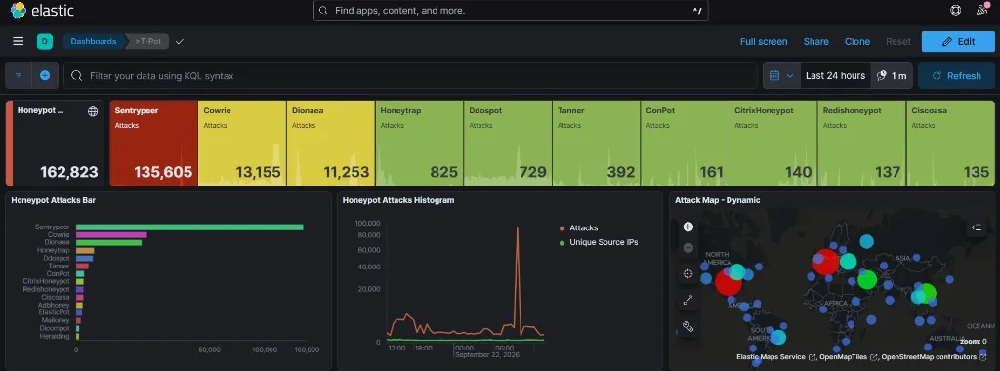
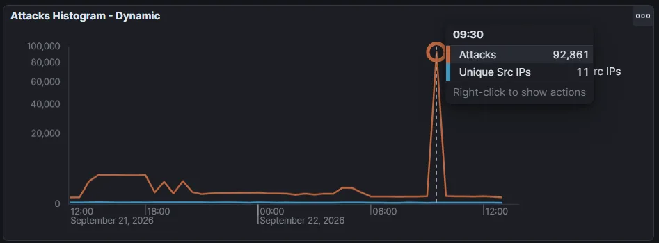
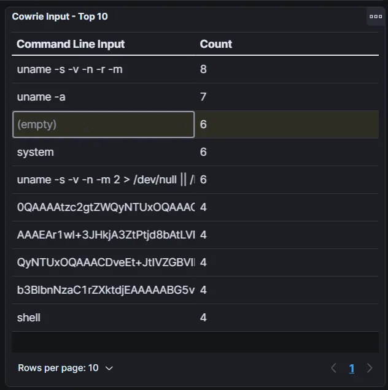
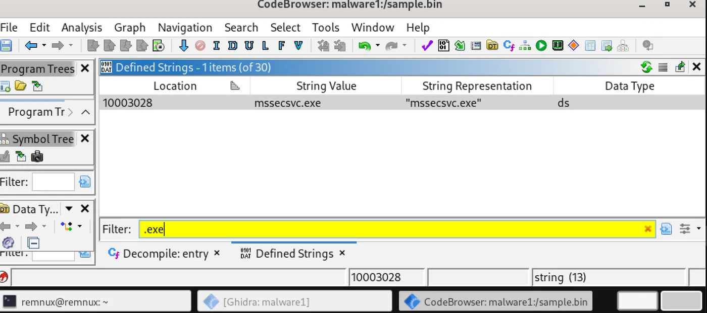
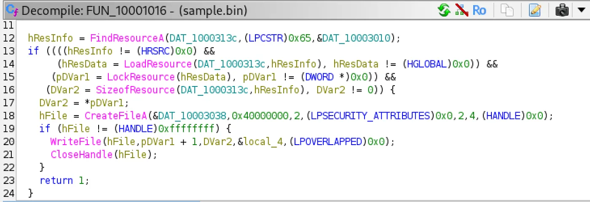

70 hours on the open internet
I rented a VPS, told nobody its address, and turned it into a honeypot. In under three days it logged 162,823 hostile events, and one of the things that came in was a piece of WannaCry.
Almost nothing that hits an exposed server is human. It is scanners, botnets and worms from years ago that still work because someone, somewhere, never patched.
01Setup: expose the bait, hide the controls
T-Pot runs a dozen honeypots in Docker containers, each faking a service (SSH, SMB, SIP, SCADA…), with Elasticsearch and Kibana on top. Exposing it is the easy part. The hard part is making sure the server's real administration is not exposed too.
- UFW deny-by-default. Ports 1–64000 open on purpose for the honeypots; the real SSH and Kibana moved to high ports and allowed from one IP only.
- Tailscale for admin. My IP changes when I move, and reopening the firewall each time is how holes get left open. Admin ports are allowed only on the
tailscale0interface, reachable at 100.xx.xxx.xxx from my own devices and nowhere else. - Port conflicts. The
tpotinitcontainer crash-looped until I freed ports 25, 53 and 5355 from exim4 and systemd-resolved.
02What arrived

| Honeypot | Pretends to be | Events | Share |
|---|---|---|---|
| Sentrypeer | SIP / VoIP (5060) | 135,605 | 83.3% |
| Cowrie | SSH / Telnet (22, 23) | 13,155 | 8.1% |
| Dionaea | SMB / RPC / SQL (445, 135, 3306) | 11,253 | 6.9% |
| Honeytrap | generic TCP | 825 | 0.5% |
| Ddospot | NTP / SSDP amplification | 729 | <0.5% |
| Tanner | web apps (SQLi, RCE) | 392 | <0.3% |
| ConPot | industrial control (SCADA) | 161 | <0.1% |
A toll-fraud sweep from 11 machines
At 09:30, 92,861 SIP requests arrived in one burst from just 11 source IPs. That is reconnaissance for toll fraud: find a badly protected phone system, then use it to call premium numbers the attacker owns, billed to the victim.

Bots checking the CPU before dropping a payload
When a script “logged in” to Cowrie with default credentials, the first commands were almost always variations of uname -a. No human types that first. It is the Mirai/Gafgyt pattern: check the CPU architecture (x86, ARM, MIPS…) to pick which binary to download.

EternalBlue is still being tried
Dionaea's traffic was mostly SMB on 445 and RPC on 135, the two services behind EternalBlue (MS17-010). Nine years after WannaCry, scanners still look for it.
03Reversing what Dionaea caught
Dionaea stores the binaries attackers push to it. file said PE32 executable (DLL) Intel 80386, for MS Windows. I copied one sample to an isolated REMnux VM and only did static analysis: the sample was never executed.
- Strings first. Two stood out:
mssecsvc.exeandlauncher.dll, both documented WannaCry artefacts. - One export. The DLL exposes a single function,
PlayGame, a harmless name for code that DoublePulsar injects intolsass.exe. - The dropper.
FUN_10001016finds resource0x65inside the DLL, locks it in memory, and writes it to disk asmssecsvc.exe: the worm component that scans for other SMB hosts.


hResInfo = FindResourceA(DAT_1000313c, (LPCSTR)0x65, &DAT_10003010);
...
hFile = CreateFileA(&DAT_10003038 /* "mssecsvc.exe" */, 0x40000000, 2, NULL, 2, 4, NULL);
WriteFile(hFile, pDVar1 + 1, DVar2, &local_4, NULL);